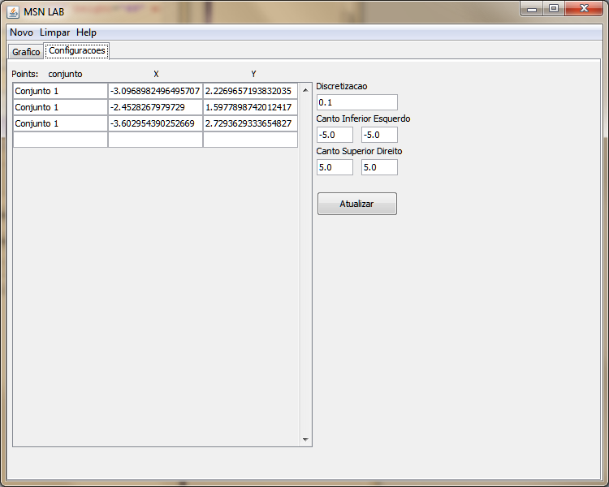
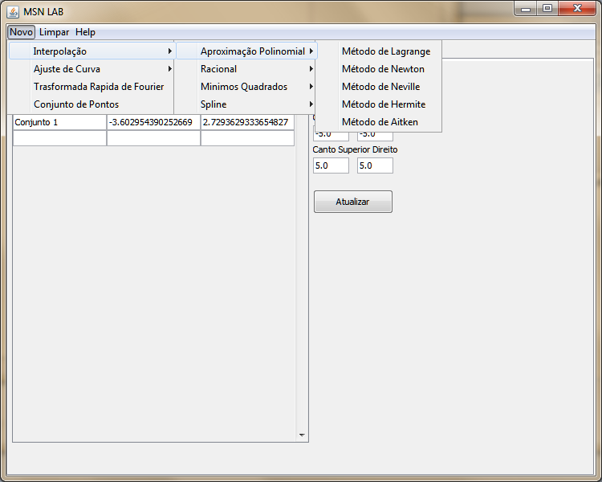
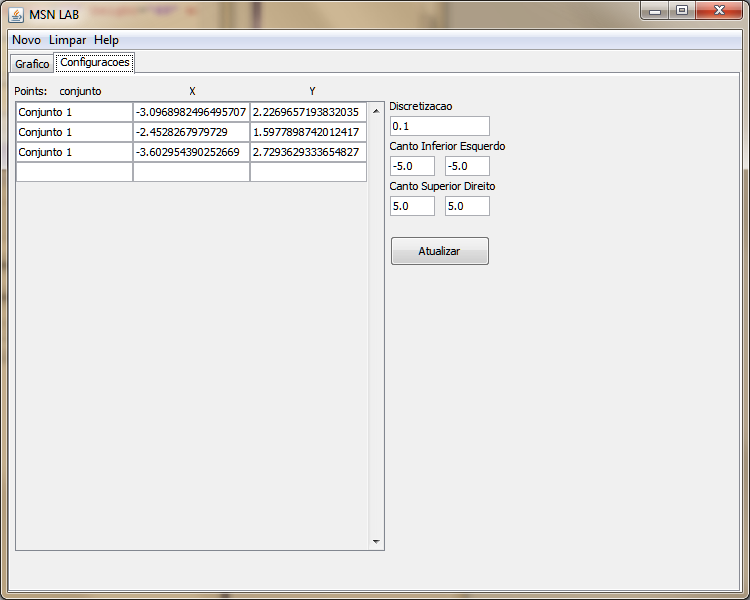
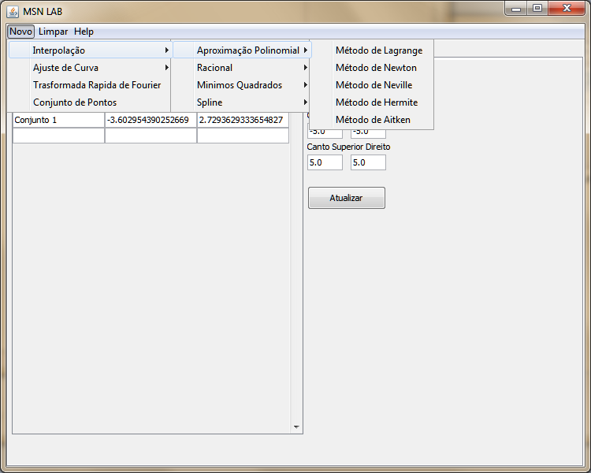

Estabeleça um conjunto de pontos na aba de Configurações.
Clique em Novo -> Interpolação -> Aproximação Polinomial -> Método de Neville
O resultado será exposto no gráfico como podemos ver na imagem a seguir:

O método de Neville baseia-se no princípio que se deve compatibilizar os conceitos (os conteúdos conceituais dos descritores, que estão expressos pelas definições) e não os descritores (as etiquetas lingüísticas). Esse método propõe linguagem intermediária, baseada na codificação numérica de conceitos através do qual torna-se possível o estabelecimento da equivalência conceitual de descritores de diferentes linguagens.
Para utilizar esta transfomada no MSN LAB siga as instruções abaixo.
Estabeleça um conjunto de pontos na aba de Configurações.
Clique em Novo -> Interpolação -> Aproximação Polinomial -> Método de Neville
O resultado será exposto no gráfico como podemos ver na imagem a seguir: